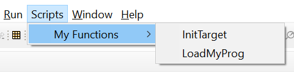
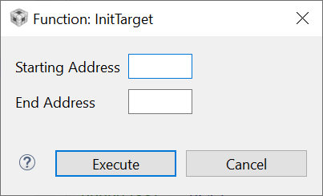

7.9.7.2. The dialog Keyword¶
Use the dialog keyword to add a GEL function to the Scripts menu and to create a dialog window for Parameters entry. When you select the function from the Scripts menu, a dialog window appears to prompt you for the Parameters to enter. The strings beside the Parameters in the function declaration are for Parameters descriptions in the dialog box.
The syntax of a dialog GEL function is as follows:
dialog funcName( paramName1 "param1 definition", paramName2 "param2 definition", ... )
{
statements
}
paramName[1-6]: Parameter variable name that is used inside the function
param1 definition: Parameter description that is printed on the dialog window beside the field
You can pass up to six Parameters to the added GEL function through the dialog window. The following example shows how you can use the dialog keyword to add two menu items.
menuitem "My Functions";
dialog InitTarget(startAddress "Starting Address", EndAddress "End Address")
{
statements
}
dialog LoadMyProg()
{
statements
}
This example adds the following sub-selections under the Scripts menu.
When you use the InitTarget command, the Function: InitTarget dialog box prompts you for the start and end addresses.
When you enter values into the entry fields, press the Execute button to call the GEL function with these Parameters.
Warning
the variables specified to be modifed by the dialog inputs must be part of the code loaded to the target, otherwise the operation will trigger an error. Also, the target must be halted, have Real-time Mode enabled or the option Halt the target before any debugger access must be enabled in the Debug Properties.